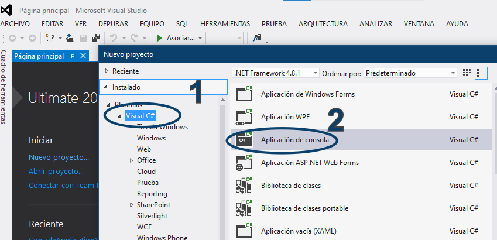

Entorno: Visual Studio 2012 | Versión de Lenguaje: C# 5.0 (.NET Framework 4.5)
Proceso de creación de una aplicación de consola estándar en Visual Studio 2012:

Elementos esenciales de la plantilla inicial de C# 5.0:
using System; Importación del espacio de nombres base.namespace Organización lógica de las clases del proyecto.class Program Clase principal contenedora.static void Main(string[] args) Punto de entrada ejecutable de la aplicación.Repaso sintáctico compatible con .NET 4.5:
get; set; explícitos
para lectura y escritura.new Persona { Nombre = "Juan" }.async y
await introducidas en esta versión junto con Task.Desarrollar los siguientes programas utilizando únicamente la sintaxis de C# 5.0:
Requerimiento: Crear una aplicación de consola que solicite al usuario 3 notas de un estudiante (valores flotantes o decimales).
Aprobado (promedio >= 9.5) o
Reprobado.Console.ReadKey() al finalizar.Requerimiento: Diseñar una clase Empleado e instanciarla en el
método Main.
Id (int),
Nombre (string) y SalarioBase (double).CalcularSalarioNeto() que descuente un 4% de seguro social y
retorne el total.Main, instanciar al menos dos objetos usando sintaxis de inicializador de
objetos, calcular su salario neto y mostrar sus datos tabulados en la consola.Requerimiento: Implementar una simulación de descarga de datos usando la
sintaxis async y await de C# 5.0.
static async Task DescargarArchivoAsync().await Task.Delay(3000) para simular una espera de 3 segundos sin bloquear
el hilo principal.